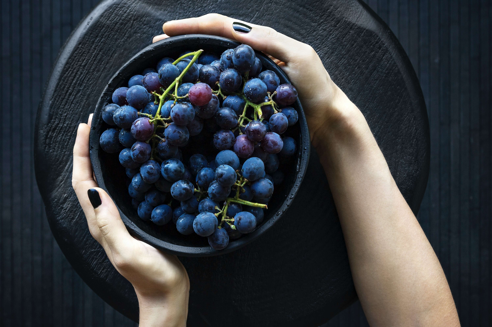

Organic
Organic is a system of farming and food production. Organic farmers aim to produce high-quality food, using methods that benefit our whole food system, from people to planet, plant health to animal welfare.
Organic is a system of farming and food production. Organic farmers aim to produce high-quality food, using methods that benefit our whole food system, from people to planet, plant health to animal welfare.
Organic is a system of farming and food production. Organic farmers aim to produce high-quality food, using methods that benefit our whole food system, from people to planet, plant health to animal welfare.
Organic food, fresh or processed food produced by organic farming methods. Organic food is grown without the use of synthetic chemicals, such as human-made pesticides and fertilizers, and does not contain genetically modified organisms (GMOs). Organic foods include fresh produce, meats, and dairy products as well as processed foods such as crackers, drinks, and frozen meals. The market for organic food has grown significantly since the late 20th century, becoming a multibillion dollar industry with distinct production, processing, distribution, and retail systems.
How your food is grown or raised can have a major impact on your mental and emotional health as well as the environment. Organic foods often have more beneficial nutrients, such as antioxidants, than their conventionally-grown counterparts and people with allergies to foods, chemicals, or preservatives may find their symptoms lessen or go away when they eat only organic foods.
Organic produce contains fewer pesticides. Chemicals such as synthetic fungicides, herbicides, and insecticides are widely used in conventional agriculture and residues remain on (and in) the food we eat.
Organic food is often fresher because it doesn’t contain preservatives that make it last longer. Organic produce is sometimes (but not always, so watch where it is from) produced on smaller farms nearer to where it is sold.
Organic farming tends to be better for the environment. Organic farming practices may reduce pollution, conserve water, reduce soil erosion, increase soil fertility, and use less energy. Farming without synthetic pesticides is also better for nearby birds and animals as well as people who live close to farms.
Organically raised animals are NOT given antibiotics, growth hormones, or fed animal byproducts. Feeding livestock animal byproducts increases the risk of mad cow disease (BSE) and the use of antibiotics can create antibiotic-resistant strains of bacteria. Organically-raised animals tend to be given more space to move around and access to the outdoors, which help to keep them healthy. 
Organic meat and milk can be richer in certain nutrients. Results of a 2016 European study show that levels of certain nutrients, including omega-3 fatty acids, were up to 50 percent higher in organic meat and milk than in conventionally raised versions.
Organic food is GMO-free. Genetically Modified Organisms (GMOs) or genetically engineered (GE) foods are plants whose DNA has been altered in ways that cannot occur in nature or in traditional crossbreeding, most commonly in order to be resistant to pesticides or produce an insecticide.
Organic Vegetables with 68% consumption top the list. Vegetables like Spinach, Tomatoes, Cauliflower, Potato, Bitter gourd, Carrot, Capsicum, Green chili constitute a significant part of the offered organic vegetable option.
The organic produce mostly has the exposure of humans rather than the toxic chemicals and fertilizers that are why they are hand weeded and densely planted.
Buy MeOrganic Fruits constitute a 52% of consumption of organic food products in India and stand second. Fruits like Alphonso Mangoes, Pomegranates, Bananas, Peaches, Apples are the most bought organic plant products.
No shots of Ethylene Hormones and Quick ripening chemicals like acetylene gas (released when calcium carbide comes in contact with water)are used. These are commonly used to ripen Apples, Bananas, and Mangoes.
The Quality of organic fruits is so fine that you can feel the consistent sweetness up to the core of the fruit, unlike chemically ripened fruits.
Buy MeOrganic pulses make for 51% consumption by Indian consumers. The pulses that feature this category include Moong, Chana, Toor, Masoor, Urad, Arhar, Kidney Beans, etc. Organically grown pulses are sweeter and enriched with high nutritional elements.
The aroma of cooked organic pulses speaks for itself and its elite level. To grow organic pulse crops, crop rotations, mulches and mechanical control like practices are used.
Buy Me51% Organic fruit juices are now being popularly bought and consumed by Indian Populace. This category includes Coconut water, Orange juice, Apple juice, Pineapple juice, Aloe vera juice, Gooseberry juice, Amla juice.
Buy MeOrganic Food grains make for 50% of their consumption. Thanks to the awareness and health conscious factor that has elicited this behavior from the Indian consumers. Products include Wheat, Millet, Corn, Maize, and Rice.
Instead of using Synthetic Nitrogen Fertilizers and persistent Herbicides and Pesticides, mulches, organic fertilizers, and Cow dung compost are used.
Buy MeIn the list of Organic Food products, 45% Organic Milk is consumed. Organic Milk simply means the milk obtained from cows that are not treated with growth hormones and antibiotics, are fed 100% Organic and allowed to graze. This is done to ensure the produced milk is free from any undesired chemicals because the cattle’s produce is affected by what they eat.
Buy MeOrganic Meat is provided from animals raised without treating, feeding and exposing them to Radiation, Herbicides, Pesticides, Sewage Sludge, additives, preservatives or Genetically Modified Organisms. They are fed grass, grains, berries, seeds and green leafy plants.
Organic Meat is enriched with Omega-3 and CLA and is a healthier option than non-organic meats.
Buy MeMost Indians are diverting towards organic tea. The reason is more flavored leaves and higher nutritional values. Organic Tea cultivation relies up on the conventional methods of farming to produce high-quality green leaves.
Hand weeding is done to avoid herbicides and weeded out plant material is mixed with Cow dung and used as the fertilizer. To repel the insects, cow urine is used.
Buy MeOrganic Eggs produced from organic chicken are kept on a natural diet and grains devoid of antibiotics, chemicals, eggshells and ground bones. The chickens are not caged. The difference can be seen in the egg’s yolk being slightly more orange.
Buy MeOrganic Beverages that are consumed include coffee, Tulsi Green Tea, Jaljeera, Aam panna, Nimbupani, Sugarcan juice, toddy and kokum juice.
Food Brands like Amira, Patanjali, Organic India, 24 Mantra, Down to Earth, Green Sense, Genera, The Organic Kitchen, Devbhumi, Aum Fresh, Assamica Agro are actively promoting the organic food trend in india.
Buy Me